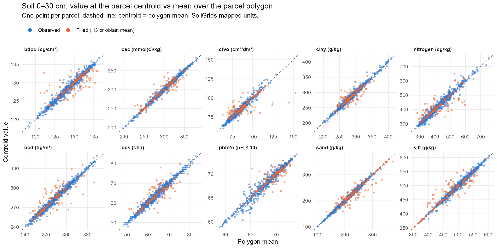

source. З output/tables/soil_source_by_case.csv.
| case | observed | h3_6 | h3_5 | oblast | total |
|---|---|---|---|---|---|
| border | 2,450 | 390 | 160 | 0 | 3,000 |
| interior | 13,070 | 770 | 160 | 0 | 14,000 |
| nodata | 580 | 2,240 | 180 | 0 | 3,000 |
Двадцять змінних описують верхній шар ґрунту (0–30 см): десять властивостей SoilGrids, кожну виміряно двома способами — як середнє по полігону ділянки та як значення в центроїді ділянки. Ділянки без ґрунтових даних отримують заповнене значення, а стовпець source вказує, як його заповнено. Скрипт: 04-soil.R.
Одиниці — картографічні одиниці SoilGrids, без перерахунку (коефіцієнти перерахунку див. на сторінці Дані).
| Властивість | Середнє по полігону | Центроїд | Одиниця | Опис |
|---|---|---|---|---|
| bdod | soil_bdod_0_30cm_mean |
soil_bdod_0_30cm_centroid |
сг/см³ | Щільність складення дрібнозему |
| cec | soil_cec_0_30cm_mean |
soil_cec_0_30cm_centroid |
ммоль(+)/кг | Ємність катіонного обміну за pH 7 |
| cfvo | soil_cfvo_0_30cm_mean |
soil_cfvo_0_30cm_centroid |
см³/дм³ | Об’ємна частка крупних уламків |
| clay | soil_clay_0_30cm_mean |
soil_clay_0_30cm_centroid |
г/кг | Вміст глини |
| nitrogen | soil_nitrogen_0_30cm_mean |
soil_nitrogen_0_30cm_centroid |
сг/кг | Загальний азот |
| ocd | soil_ocd_0_30cm_mean |
soil_ocd_0_30cm_centroid |
гг/м³ | Щільність органічного вуглецю |
| ocs | soil_ocs_0_30cm_mean |
soil_ocs_0_30cm_centroid |
т/га | Запас органічного вуглецю, 0–30 см |
| phh2o | soil_phh2o_0_30cm_mean |
soil_phh2o_0_30cm_centroid |
pH × 10 | pH водної витяжки |
| sand | soil_sand_0_30cm_mean |
soil_sand_0_30cm_centroid |
г/кг | Вміст піску |
| silt | soil_silt_0_30cm_mean |
soil_silt_0_30cm_centroid |
г/кг | Вміст пилу |
SoilGrids подає кожну властивість для шарів глибини 0–5, 5–15 та 15–30 см. Одне значення для верхнього шару — це їх середнє, зважене за товщиною шару, обчислене для кожного пікселя:
\[ \text{topsoil}_{0\text{–}30} = \frac{5 \cdot d_{0\text{–}5} + 10 \cdot d_{5\text{–}15} + 15 \cdot d_{15\text{–}30}}{30} \]
Запас органічного вуглецю ocs уже наведено для шару 0–30 см, і він використовується без змін.
Кожен растр глибини спершу обрізається за охопленням Полтавської та сусідніх областей у системі координат ґрунтових даних (Interrupted Goode Homolosine). Арифметичні операції виконуються на цій обрізаній сітці. Растри ніколи не передискретизуються і не перепроєктовуються; 10 шарів верхнього шару ґрунту зберігаються як data/interim/soil_topsoil_0_30cm.tif. Натомість ділянки трансформуються до системи координат ґрунтових даних.
_mean: exactextractr::exact_extract(soil, parcels, "mean"). Враховується кожен піксель 250 м, якого торкається ділянка, зважений за часткою пікселя всередині ділянки. Пікселі NoData пропускаються, тож ділянка, частково вкрита ґрунтовими даними, отримує середнє по вкритій частині і вважається observed._centroid: terra::extract() у центроїді ділянки: значення одного пікселя під центральною точкою.Ділянка 3 га значно менша за один піксель 250 м (6,25 га), тому два значення часто збігаються. Вони відрізняються, коли ділянка лежить на межі пікселів або поблизу NoData.
Ділянка у містах, на річках або водосховищі не має ґрунтового значення. Для заповнення використовується середнє ґрунтового растра по більшій зоні навколо ділянки, у такому порядку:
h3_6: середнє по комірці H3 роздільності 6, в якій лежить ділянка (близько 34 км²);h3_5: якщо ця комірка не має ґрунтових даних, середнє по її комірці H3 роздільності 5 (близько 240 км²);oblast: якщо й вона порожня, середнє по власній області ділянки (Полтавській або сусідній).Середні по зонах теж обчислюються через exact_extract(..., "mean"), тому пікселі NoData пропускаються. Ідентифікатори комірок H3 беруться з файлу ділянок; полігони шестикутників відновлюються з ідентифікаторів за допомогою h3o::h3_from_strings() та st_as_sfc().
У коді:
Заповнення застосовується до змінних _mean та _centroid окремо: ділянка може мати спостережене середнє по полігону та заповнене значення в центроїді. У цьому запуску 16 100 ґрунтових рядків є спостереженими, 3 400 заповнено з H3 роздільності 6, 500 — з H3 роздільності 5, і жодного — із середнього по області. Більшість заповнених рядків належать ділянкам nodata, як і передбачалося:
source. З output/tables/soil_source_by_case.csv.
| case | observed | h3_6 | h3_5 | oblast | total |
|---|---|---|---|---|---|
| border | 2,450 | 390 | 160 | 0 | 3,000 |
| interior | 13,070 | 770 | 160 | 0 | 14,000 |
| nodata | 580 | 2,240 | 180 | 0 | 3,000 |
Зони заповнення розміщено в одному блоці 04-soil.R, позначеному FILL ZONES. Щоб заповнювати за адміністративними одиницями замість комірок H3:
data/raw/cod-ab (zip-архів зі shapefile містить усі рівні);st_join();exact_extract(soil, zones, "mean", append_cols = <zone code>) для цих полігонів і виконайте з’єднання за кодом зони.Наскільки важливий метод вимірювання? Рисунок порівнює два значення для кожної ділянки та властивості. Точки на пунктирній лінії мають однакові значення.

observed: ділянки, де обидва значення спостережені; all: усі 1 000 ділянок. З output/tables/soil_centroid_vs_polygon.csv.
| Властивість (одиниця) | Рядки | Пірсон | Спірмен | Середня абс. різниця | n |
|---|---|---|---|---|---|
| bdod (cg/cm³) | observed | 0.985 | 0.984 | 0.381 | 764 |
| bdod (cg/cm³) | all | 0.961 | 0.961 | 0.454 | 1000 |
| cec (mmol(c)/kg) | observed | 0.995 | 0.994 | 2.110 | 764 |
| cec (mmol(c)/kg) | all | 0.990 | 0.986 | 2.466 | 1000 |
| cfvo (cm³/dm³) | observed | 0.977 | 0.974 | 1.435 | 764 |
| cfvo (cm³/dm³) | all | 0.931 | 0.945 | 1.800 | 1000 |
| clay (g/kg) | observed | 0.991 | 0.987 | 3.096 | 764 |
| clay (g/kg) | all | 0.981 | 0.970 | 3.475 | 1000 |
| nitrogen (cg/kg) | observed | 0.984 | 0.982 | 9.888 | 764 |
| nitrogen (cg/kg) | all | 0.965 | 0.964 | 11.294 | 1000 |
| ocd (hg/m³) | observed | 0.990 | 0.989 | 1.990 | 764 |
| ocd (hg/m³) | all | 0.974 | 0.971 | 2.356 | 1000 |
| ocs (t/ha) | observed | 0.990 | 0.988 | 0.676 | 764 |
| ocs (t/ha) | all | 0.976 | 0.972 | 0.777 | 1000 |
| phh2o (pH × 10) | observed | 0.979 | 0.979 | 0.327 | 764 |
| phh2o (pH × 10) | all | 0.967 | 0.960 | 0.341 | 1000 |
| sand (g/kg) | observed | 0.995 | 0.995 | 2.434 | 764 |
| sand (g/kg) | all | 0.987 | 0.984 | 3.291 | 1000 |
| silt (g/kg) | observed | 0.991 | 0.990 | 3.688 | 764 |
| silt (g/kg) | all | 0.982 | 0.976 | 4.566 | 1000 |
Для спостережених ділянок кореляції перевищують 0,97 для кожної властивості. Середня абсолютна різниця мала порівняно з діапазоном значень, але не нульова: реалізації, що використовують центроїд, і ті, що використовують середнє по полігону, не збігатимуться точно.
04-soil.R# 04-soil.R
# In: data/clean/reference/parcels.parquet, data/interim/oblasts.gpkg, 28 SoilGrids rasters in soil_dir
# Out: data/interim/soil_topsoil_0_30cm.tif, data/interim/long_soil.parquet
# Purpose: topsoil (0-30 cm) soil properties per parcel (polygon mean and centroid), with NoData filled.
#
# Units are SoilGrids mapped units (not converted):
# bdod cg/cm3, cec mmol(c)/kg, cfvo cm3/dm3, clay g/kg, nitrogen cg/kg,
# ocd hg/m3, phh2o pH x 10, sand g/kg, silt g/kg, ocs t/ha (already 0-30 cm).
# Topsoil = (5 * d0_5 + 10 * d5_15 + 15 * d15_30) / 30, per pixel.
# NoData fill order: H3 res-6 cell mean -> H3 res-5 cell mean -> oblast mean.
# The level used goes in `source`. A parcel partly covered by soil data counts as "observed".
source("00-setup.R")
# Parcels and study area in the soil CRS --------------------------------------
parcels <- arrow::read_parquet(parcels_path, as_data_frame = FALSE) |> st_as_sf()
oblasts <- st_read(oblasts_path, quiet = TRUE)
poltava <- oblasts |> filter(oblast_en == study_oblast_en)
study_oblasts <- oblasts |> filter(lengths(st_intersects(oblasts, poltava)) > 0) # Poltava and its neighbours
soil_crs <- crs(rast(file.path(soil_dir, "clay_0-5cm_mean.tif"))) # Interrupted Goode Homolosine
parcels_soil <- st_transform(parcels, soil_crs)
study_oblasts_soil <- st_transform(study_oblasts, soil_crs)
study_box <- vect(study_oblasts_soil) # crop() uses its extent
cli_inform("Study area: {study_oblast_en} and {nrow(study_oblasts) - 1} neighbouring oblasts.")
# Topsoil 0-30 cm rasters -----------------------------------------------------
# Topsoil 0-30 cm: thickness-weighted average of the 0-5, 5-15 and 15-30 cm layers
soil_bdod_0_30cm <- (5 * crop(rast(file.path(soil_dir, "bdod_0-5cm_mean.tif")), study_box) +
10 * crop(rast(file.path(soil_dir, "bdod_5-15cm_mean.tif")), study_box) +
15 * crop(rast(file.path(soil_dir, "bdod_15-30cm_mean.tif")), study_box)) / 30
soil_cec_0_30cm <- (5 * crop(rast(file.path(soil_dir, "cec_0-5cm_mean.tif")), study_box) +
10 * crop(rast(file.path(soil_dir, "cec_5-15cm_mean.tif")), study_box) +
15 * crop(rast(file.path(soil_dir, "cec_15-30cm_mean.tif")), study_box)) / 30
soil_cfvo_0_30cm <- (5 * crop(rast(file.path(soil_dir, "cfvo_0-5cm_mean.tif")), study_box) +
10 * crop(rast(file.path(soil_dir, "cfvo_5-15cm_mean.tif")), study_box) +
15 * crop(rast(file.path(soil_dir, "cfvo_15-30cm_mean.tif")), study_box)) / 30
soil_clay_0_30cm <- (5 * crop(rast(file.path(soil_dir, "clay_0-5cm_mean.tif")), study_box) +
10 * crop(rast(file.path(soil_dir, "clay_5-15cm_mean.tif")), study_box) +
15 * crop(rast(file.path(soil_dir, "clay_15-30cm_mean.tif")), study_box)) / 30
soil_nitrogen_0_30cm <- (5 * crop(rast(file.path(soil_dir, "nitrogen_0-5cm_mean.tif")), study_box) +
10 * crop(rast(file.path(soil_dir, "nitrogen_5-15cm_mean.tif")), study_box) +
15 * crop(rast(file.path(soil_dir, "nitrogen_15-30cm_mean.tif")), study_box)) / 30
soil_ocd_0_30cm <- (5 * crop(rast(file.path(soil_dir, "ocd_0-5cm_mean.tif")), study_box) +
10 * crop(rast(file.path(soil_dir, "ocd_5-15cm_mean.tif")), study_box) +
15 * crop(rast(file.path(soil_dir, "ocd_15-30cm_mean.tif")), study_box)) / 30
soil_phh2o_0_30cm <- (5 * crop(rast(file.path(soil_dir, "phh2o_0-5cm_mean.tif")), study_box) +
10 * crop(rast(file.path(soil_dir, "phh2o_5-15cm_mean.tif")), study_box) +
15 * crop(rast(file.path(soil_dir, "phh2o_15-30cm_mean.tif")), study_box)) / 30
soil_sand_0_30cm <- (5 * crop(rast(file.path(soil_dir, "sand_0-5cm_mean.tif")), study_box) +
10 * crop(rast(file.path(soil_dir, "sand_5-15cm_mean.tif")), study_box) +
15 * crop(rast(file.path(soil_dir, "sand_15-30cm_mean.tif")), study_box)) / 30
soil_silt_0_30cm <- (5 * crop(rast(file.path(soil_dir, "silt_0-5cm_mean.tif")), study_box) +
10 * crop(rast(file.path(soil_dir, "silt_5-15cm_mean.tif")), study_box) +
15 * crop(rast(file.path(soil_dir, "silt_15-30cm_mean.tif")), study_box)) / 30
# Organic carbon stock is already given for 0-30 cm
soil_ocs_0_30cm <- crop(rast(file.path(soil_dir, "ocs_0-30cm_mean.tif")), study_box)
soil <- c(soil_bdod_0_30cm, soil_cec_0_30cm, soil_cfvo_0_30cm, soil_clay_0_30cm, soil_nitrogen_0_30cm,
soil_ocd_0_30cm, soil_phh2o_0_30cm, soil_sand_0_30cm, soil_silt_0_30cm, soil_ocs_0_30cm)
names(soil) <- c("soil_bdod_0_30cm", "soil_cec_0_30cm", "soil_cfvo_0_30cm", "soil_clay_0_30cm",
"soil_nitrogen_0_30cm", "soil_ocd_0_30cm", "soil_phh2o_0_30cm", "soil_sand_0_30cm",
"soil_silt_0_30cm", "soil_ocs_0_30cm")
writeRaster(soil, soil_topsoil_path, overwrite = TRUE)
soil <- rast(soil_topsoil_path)
# Parcel values ---------------------------------------------------------------
# Polygon mean, weighted by the share of each pixel inside the parcel (NoData pixels are skipped)
soil_mean <- exact_extract(soil, parcels_soil, "mean", append_cols = "parcel_id", progress = FALSE) |>
pivot_longer(-parcel_id, names_to = "property", names_prefix = "mean.", values_to = "value_raw") |>
mutate(variable = paste0(property, "_mean"))
# Value of the pixel under the parcel centroid
soil_centroid <- terra::extract(soil, vect(st_centroid(parcels_soil)), ID = FALSE) |>
mutate(parcel_id = parcels_soil$parcel_id) |>
pivot_longer(-parcel_id, names_to = "property", values_to = "value_raw") |>
mutate(variable = paste0(property, "_centroid"))
soil_long <- bind_rows(soil_mean, soil_centroid) |>
mutate(value_raw = if_else(is.nan(value_raw), NA, value_raw)) |> # a parcel with no soil data gives NaN
left_join(st_drop_geometry(parcels) |> select(parcel_id, case, oblast, h3_6, h3_5), by = "parcel_id")
# =============================================================================
# FILL ZONES
# Mean soil value in each zone, used where a parcel has no soil data.
# To use rayon or hromada polygons instead of H3 cells, read COD-AB ADM2 (rayon)
# or ADM3 (hromada) from data/raw/cod-ab, add the zone code to the parcels with
# st_join(), and replace the H3 zones below with those polygons and codes.
# =============================================================================
# H3 hexagons of the parcels' cells, built from the cell IDs
hex_6 <- tibble(h3_6 = unique(parcels$h3_6)) |>
mutate(geometry = h3o::h3_from_strings(h3_6) |> st_as_sfc()) |>
st_as_sf() |>
st_transform(soil_crs)
hex_5 <- tibble(h3_5 = unique(parcels$h3_5)) |>
mutate(geometry = h3o::h3_from_strings(h3_5) |> st_as_sfc()) |>
st_as_sf() |>
st_transform(soil_crs)
zone_h3_6 <- exact_extract(soil, hex_6, "mean", append_cols = "h3_6", progress = FALSE) |>
pivot_longer(-h3_6, names_to = "property", names_prefix = "mean.", values_to = "h3_6_value")
zone_h3_5 <- exact_extract(soil, hex_5, "mean", append_cols = "h3_5", progress = FALSE) |>
pivot_longer(-h3_5, names_to = "property", names_prefix = "mean.", values_to = "h3_5_value")
# Oblast mean, for Poltava and its neighbours (joined on the parcel's oblast)
zone_oblast <- exact_extract(soil, study_oblasts_soil, "mean", append_cols = "oblast_en", progress = FALSE) |>
rename(oblast = oblast_en) |>
pivot_longer(-oblast, names_to = "property", names_prefix = "mean.", values_to = "oblast_value")
# Fill ------------------------------------------------------------------------
soil_long <- soil_long |>
left_join(zone_h3_6, by = c("h3_6", "property")) |>
left_join(zone_h3_5, by = c("h3_5", "property")) |>
left_join(zone_oblast, by = c("oblast", "property")) |>
mutate(
h3_6_value = if_else(is.nan(h3_6_value), NA, h3_6_value),
h3_5_value = if_else(is.nan(h3_5_value), NA, h3_5_value),
value = coalesce(value_raw, h3_6_value, h3_5_value, oblast_value),
source = case_when(
!is.na(value_raw) ~ "observed",
!is.na(h3_6_value) ~ "h3_6",
!is.na(h3_5_value) ~ "h3_5",
!is.na(oblast_value) ~ "oblast"
)
)
if (anyNA(soil_long$value)) cli_abort("Some soil values are still missing after the fill.")
if (nrow(soil_long) != 20 * nrow(parcels)) cli_abort("Expected 20 soil rows per parcel, got {nrow(soil_long)} rows.")
# Counts by source and case
soil_long |> count(source, case) |> print()
# Save ------------------------------------------------------------------------
long_soil <- soil_long |> select(parcel_id, variable, value, source)
gc() # release memory-mapped files before overwriting (Windows)
arrow::write_parquet(long_soil, long_soil_path)
cli_inform("Soil done: {n_distinct(long_soil$variable)} variables, {nrow(long_soil)} rows in {.path {long_soil_path}}.")